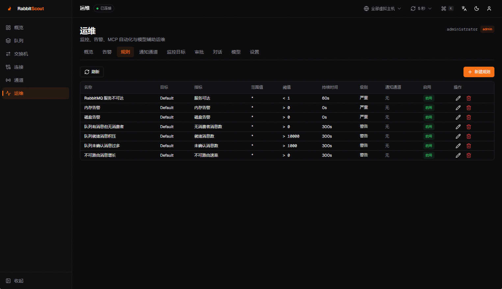
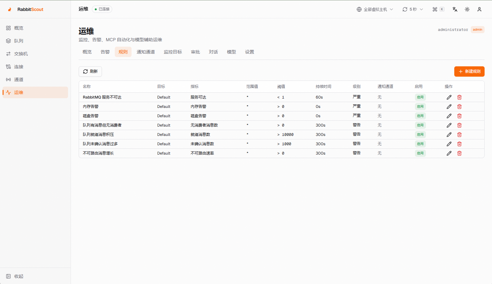
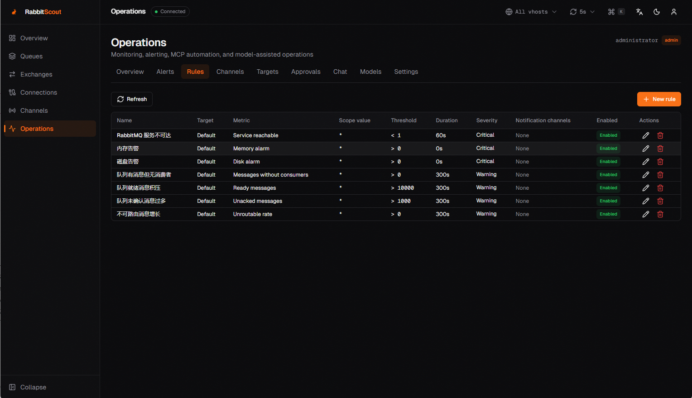
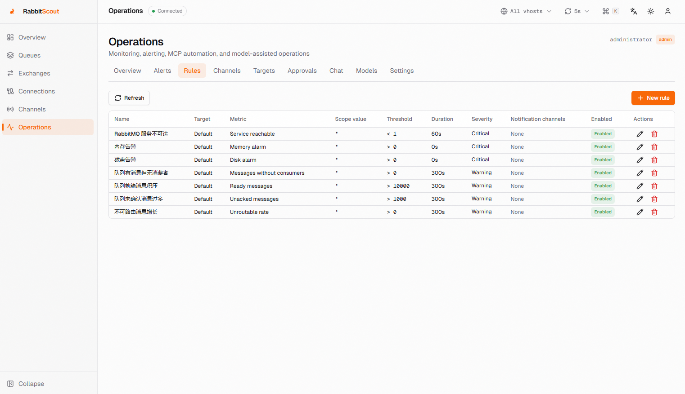

实时仪表盘
消息速率、队列分布、集群健康、内存/磁盘告警和节点资源一屏掌握。
实时监控、队列管理、告警通知、MCP 自动化与模型辅助对话。 面向内网部署，保留 RabbitMQ 权限体系，不改变服务端。

海浪电台 队列会堵，发布也会堵，但周五的下班不会。海心云 MQ 管理台负责把消息送到该去的地方，剩下的交给时间。
Features
在原有 RabbitMQ 管理能力上，增加面向生产运维的监控、通知和自动化工作流。
消息速率、队列分布、集群健康、内存/磁盘告警和节点资源一屏掌握。
创建、查看、删除、清空队列；浏览消息、发布测试消息、查看消费者。
声明交换机、查看绑定关系、向队列添加绑定，支持 classic / quorum / stream。
队列积压、无消费者、未确认消息、速率异常；多邮件/Webhook 通道，失败重试。
本地 opencode 通过 MCP 查询 Broker；写操作必须人工审批，并记录完整审计。
配置 OpenAI 兼容或 Ollama 模型，用自然语言查询队列、告警和指标。
About HainMQ
海心云 MQ 管理台（HainMQ Console）把 RabbitMQ 管理、监控、告警和运维自动化放进一个自用平台。 它不改变 RabbitMQ 服务端，不需要 PostgreSQL 或 Redis，单个 Docker 容器即可运行，适合内网、 测试环境和中小规模生产集群。
面向团队内部使用，不做多租户 SaaS；沿用 RabbitMQ 账号与权限体系，敏感数据留在自己的网络里。
嵌入式 SQLite + 进程内调度器，不引入 PostgreSQL、Redis 或独立 Worker，部署和迁移更简单。
统一管理多个 RabbitMQ Management 端点，覆盖队列、消息、DLQ、告警、审计、备份和审批。
写操作审批、审计日志、SQLite 备份与暂存式恢复，让日常运维有记录、有退路。
FAQ
部署、兼容性、多集群和告警行为，一次说清楚。
海心云 MQ 管理台（HainMQ Console）是面向自用与内网环境的 RabbitMQ 管理与运维控制台，提供队列管理、监控、告警、审计、备份、多集群和 MCP 自动化能力。
支持启用 rabbitmq_management 插件的 RabbitMQ 3.x 和 4.x，通过 Management HTTP API 工作。
支持。通过 RABBITMQ_CLUSTERS 配置多个 Management 端点，登录时选择集群，登录后可在顶栏或后台切换，并会针对目标集群重新校验凭据。
不需要。运维数据使用嵌入式 SQLite，调度器运行在应用进程内，目标是单容器部署，不引入额外服务依赖。
不会。告警由服务端调度器生成并保存在 SQLite 中，关闭浏览器只停止页面轮询，邮件和 Webhook 仍会继续发送。
推荐使用 Docker 镜像 cocam/hainmq-console:2.1.3，挂载 /app/data，开放 3000 端口，并通过 HTTPS 反向代理访问。
Screenshots
截图拍摄于替换上游 Logo 之前；生产环境使用海心云品牌标记或你自己的 Logo。
简体中文 · 深色Rules

简体中文 · 浅色Rules

English · DarkRules

English · LightRules
Quick start
需要 RabbitMQ 已启用 management 插件，并且容器能访问 15672；只有 5672 不够。
启用 rabbitmq_management，确认 http://host:15672 可访问。
挂载 hainmq-data 保存 SQLite 数据，端口 3000 提供 Web UI。
用 RabbitMQ 账号登录；administrator 可进入运维配置。
docker run -d --name hainmq-console \
-p 3000:3000 \
-e RABBITMQ_HOST=host.docker.internal \
-e RABBITMQ_PORT=15672 \
-e RABBITMQ_PROTOCOL=http \
-v hainmq-data:/app/data \
--restart=always \
cocam/hainmq-console:2.1.3Operations
需要后台采集时，增加以下环境变量；密钥请本地保存，不要提交 Git。
| 变量 | 说明 |
|---|---|
OPS_ENCRYPTION_KEY | 32 字节 base64 密钥，用于加密存储的密码和 Token |
OPS_MCP_TOKEN | 本地 opencode MCP 访问 Token |
OPS_RABBITMQ_USERNAME | 只读采集账号，建议 monitoring tag |
OPS_ADMIN_USERS | 允许管理运维模块的 RabbitMQ 用户，默认 administrator |
OPS_CHAT_ENABLED | 是否启用 Web 对话，默认 true |
OPS_MCP_ALLOW_WRITE | 写工具开关，写操作仍需人工审批 |
OPS_MCP_ALLOW_PEEK | 是否允许读取消息体，默认 false |
建议只在内网开放 3000 和 15672，并使用 HTTPS 反向代理。
/app/dataDeployment
静态托管只承载这个主页；应用本身需要 Docker 运行时。
使用 cocam/hainmq-console:2.1.3，挂载 hainmq-data，开放 3000。适合 ECS、物理机、NAS、K8s。
登录、RabbitMQ 代理、运维 API、MCP 和 SQLite 都需要服务端；Pages 只能托管静态文件。